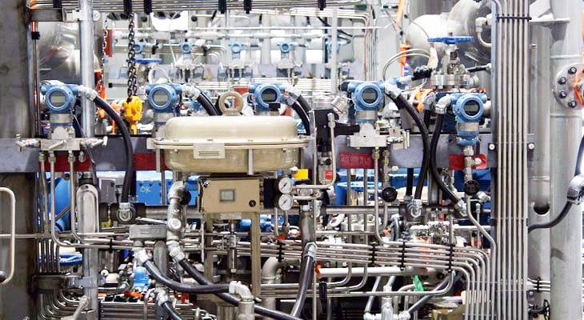
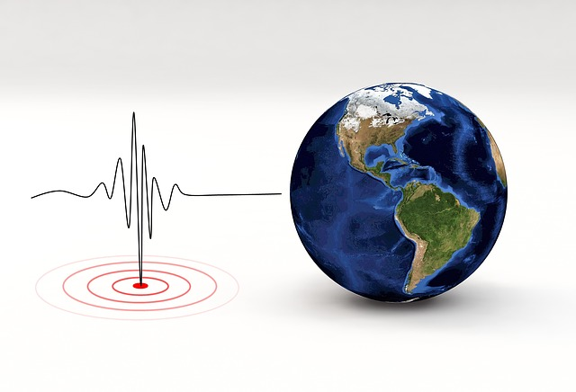

Apa itu Program Studi Fisika?
Secara Etimologi, Fisika berasal dari bahasa Yunani, yaitu Fysikos atau Fysis yang berarti Alam.
Dalam bahasa Inggris, penulisannya menjadi Physics. Sedangkan, secara terminologi, Fisika adalah ilmu alam yang mempelajari tentang materi dan gerak, serta kaitannya dengan energi dan gaya.
Fisika merupakan salah satu pilar utama ilmu pengetahuan dan teknologi yang memberikan pemahaman mengenai fenomena alam serta kemungkinan aplikasinya dalam meningkatkan kesejahteraan hidup umat manusia.
Fisika juga diketahui sebagai salah satu ilmu dasar yang menjadi pondasi atau landasan dari berbagai ilmu lain, Termasuk jurusan teknik yang hampir ilmunya berakar dari ilmu fisika.
Ilmu Fisika memberikan pengetahuan mendetail tentang bumi, serta turut berperan dalam perkembangan teknologi dan berbagai peran penting sejak berabad-abad lalu, sebut saja penemuan Newton mengenai gravitasi hingga Teori Relativitas Einstein.
Hingga saat ini ilmu fisika sangat mendukung perkembangan teknologi, industri, komunikasi, kerekayasaan, kimia, kedokteran, dan masih banyak lagi.
Jadi, Program studi Fisika ini mengajak para mahasiswa untuk mempelajari gejala alam yang tidak hidup atau materi dalam lingkup ruang dan waktu.
Para mahasiswa juga akan mempelajari perilaku dan sifat materi dalam bidang yang sangat beragam, mulai dari partikel submikroskopis yang membentuk segala materi hingga perilaku materi alam semesta sebagai satu kesatuan kosmos.
Peminatan dalam Prodi Fisika
Di dalam Program Studi fisika sendiri ternyata akan dibagi lagi menjadi beberapa bidang peminatan atau konsentrasi.
Dan Para Mahasiswa Program Studi Fisika akan memilih salah satu dari bidang peminatan tersebut.
Berikut adalah beberapa bidang peminatan yang ada di dalam Program Studi Fisika.
1. Instrumentasi

Instrumentasi adalah bidang peminatan yang mempelajari tentang dasar-dasar elektronika seperti merangkai komponen alat – alat elektronik.
Instrumentasi berkonsentrasi pada ilmu fisika yang berkaitan dengan listrik. Dasar – dasar yang harus dikuasai pada bidang instrumentasi adalah
gerbang logika, rangkaian penguat, mikrokontroler, dan rangkaian RLC. Mata kuliah yang diampu seperti listrik magnet dan elektronika dasar.
Mahasiswa peminatan Instrumentasi akan mempelajari rangkaian listrik dan aplikasinya pada bidang elektronika yang terus berkembang.
2. Material
Material adalah bidang peminatan yang mempelajari karakteristik suatu materi seperti komposisi dan kandungan bahan yang digunakan dalam pembuatan komponen elektronika.
Dalam material juga dipelajari sifat – sifat material di alam dan pemanfaatannya. Mata kuliah yang diampu seperti ilmu bahan. Aplikasi ilmu fisika dan material dapat digunakan
untuk menemukan fungsi dan gabungan material baru sesuai kebutuhan seperti besi yang memiliki konduktivitas yang berbeda dimanfaatkan untuk kebutuhan yang berbeda, menciptakan
formula cat yang tahan terhadap cuaca, kelembaban, dan kondisi. Mahasiswa yang menempuh peminatan material akan memperoleh pengetahuan dasar tentang material sehingga dapat
digunakan dalam bidang industri.
3. Geofisika

Geofisika atau Fisika bumi merupakan upaya dari program studi fisika untuk memenuhi kebutuhan pengetahuan tentang kebumian bagi mahasiswa dan bagian dari konsentrasi dari prodi Fisika.
Kajian yang dibahas adalah struktur bumi dan karakteristiknya meliputi lapisan penyusun bumi dan siklus kehidupan yang terus berlangsung serta pengaruhnya terhadap kehidupan
makhluk hidup didalamnya. Ketekaitan antara fisika dan ilmu kebumian misalnya pengetahuan tentang gempa, dalam fisika dipelajari penyebab gempa dalam konteks gelombang dan
kekuatannya sehingga dapat dibuat alat untuk mendeteksi gempa bumi agar tidak menimbulkan dampak kerusakan yang besar pada kehidupan.
Penutup
Demikianlah beberapa bidang peminatan atau konsentrasi dalam program studi Fisika. Selain 3 bidang peminatan yang disebutkan diatas, ternyata masih ada lagi bidang peminatan lainnya
yang ada di dalam program studi Fisika, seperti Fisika Komputasi, Fisika Medis, Biofisika, Fisika Nuklir dan Partikel, Fisika Terkondensasi, dan Fisika Pendidikan. Semua bidang peminatan
tersebut tentu akan sangat berguna di dunia kerja nanti dan Para mahasiswa program studi Fisika bisa memilih salah satu dari bidang peminatan tersebut yang sesuai dengan passion mereka.